May 30th
Dilution of the Primers
- 10 times the volume of water was added into primer dry powder to turn the concentration into 100 μM.（1 nmol primer add 10 μL ddH2O）
- The sense primer was diluted to a concentration of 50 μM, and the anti-sense primer was diluted to 1 μM.
| μL | Final concentration | |
|---|---|---|
| 5×Reaction Buffer | 10 | 1× |
| Sense Primer | 1 | 1 μM |
| Anti-sense Primer | 1 | 20 nM |
| M13 RF | 0.5 | 5ng |
| dNTP | 1 | |
| Q5 | 0.5 | 1U |
| ddH2O | 36 |
The Program of PCR According to the Following Condition.
- Pre-denaturation at 95 ℃ for 4 min. Denaturation at 95 ℃ for 30 s, annealing at 55 ℃ for 30 s, extension at 72 ℃ for 5 min 30 s, 35 cycles. Final extension at 72 ℃ for 5 min and store at 4 ℃.
Preparation and Condition for Agarose Gel Electrophoresis(0.8%)
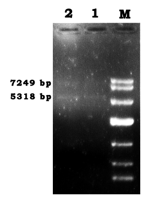
- Gel electrophoresis was conducted by a standard procedure as follows:
- Mix 0.2 g agarose with 25 mL 1×TAE, heat to boil by microwave oven for three times.
- Add 5 μL EtBr when the temperature of gel is below 50 ℃.
- Mix 50 μL PCR product with 5.5 μL 10×loading buffer.
- Apply 25 μL of the PCR mixture to wells.
- Apply 80 V, 400 mA, for about 30 min.
May 31st
Gel Recovery Procedure
- Conducted by the following protocol:
- Excise the DNA fragment from the agarose gel.
- Weigh the gel slice and add 3 volumes of Extraction Buffer to 1 volume of gel（100 mg=100 μL）. The gel slices’ weights were 0.2766 g，0.2591 g and 0.2121 g.
- Incubate at 50 ℃ until the gel melts in a heating block and eddy the tube every 2-3 min during the incubation.
- Apply the sample to Spin column, and centrifuge for 1 min at 6000×g. Discard the flow-through.
- Add 500 μL Extraction Buffer to Spin column, and centrifuge for 60 s at 12000×g. Discard the flow-through.
- Add 750 μL Wash Buffer to Spin column, waiting for 3 min, then centrifuge for 60 s at 12000×g. Discard the flow-through.
- Centrifuge for an additional 1 min at 12000×g and transfer the Spin column to a sterile 1.5 mL micro-centrifuge tube.
- Add 50 μL elution buffer to the Spin column and let it stand for 1 min at room temperature.
- Centrifuge for 1 min at 12000×g. The Buffer in the microcentrifuge tube containing the DNA.
- The value of OD260 was 0.120 OD.
June 1st
The First Assembly
- Every one of the 118 staples was diluted to a concentration of 100 μM. 10μL of each with 820 μL ddH2O were added to make the concentration of the staple mixture 500 nM.
- For the Tris-Hcl（Mg2+）Buffer, 0.012 g Tris base, 0.0268 g MgAc and 80 μL HCL were added to reach a final concentration of 10 mM Tris and 12.5 mM Mg2+.
The Annealing Reaction
- The reaction was set as the following table(Scaffold:Staple=1:10)
- The reaction took place at 50 ℃ for 1 h , and the procedures were stored at 4 ℃.
- The staple mixture (500 nM) was diluted into a concentration of 170 nM, then added into the reaction tube.
| Volume | Final concentration | |
|---|---|---|
| Scaffold | 15 μL | 1.7 nM |
| Staple | 5 μL | 17 nM |
| Reaction buffer(Tris) | 30 μL | 6 mM Tris, 7.5 mM MgAc |
June 5th
Preparation for the Silicon Slices
- The slices in a mixture of 35 mL Dense H2SO4 and 15 mL H2O2 were heated for 20 min, until there were no bubbles.
- Discard the solution. The slices were washed with water for several times then were put into a clean beaker.
- Ultrapure water were added for liquid sealing and the beaker was sealed with sealing film.
Sample Adsorption
- A 5 μL volume of the sample was deposited onto each silicon slice.
- Then it was left to adsorb for 5 min.
- The silicon slices were washed with ddH2O to remove the salt, then they were left to air dry and waited for imaging.
June 6th
The Atomic Force Microscopy（AFM） Characterization
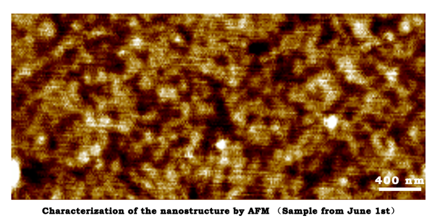
June 8th
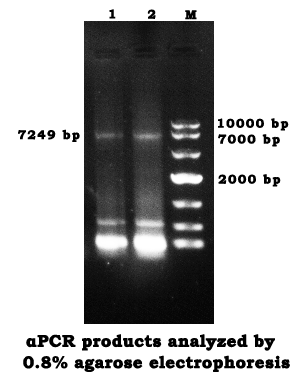
- The αPCR and agarose gel electrophoresis on May 30th were repeated.
- The gel recovery was repeated as the procedure on May 31st.
- The value of OD260 was 0.107 OD.
June 9th
The Annealing Reaction
- The reaction was set as the following table(Scaffold:Staple=1:10&1:5)
- Reaction condition: Pre-denaturation at 95 ℃ for 4 min. Denaturation at 95 ℃ for 30 s, annealing at 60 ℃ for 30 s, extension at 72 ℃ for 5 min, Denaturation at 95 ℃ for 30 s, annealing at 50 ℃ for 30 s, extension at 72 ℃ for 5 min, 4 cycles. Final extension at 72 ℃ for 5 min, 37 ℃ for 30 min and store at 4 ℃.
- The staple mixture (500 nM) was diluted into a concentration of 60 nM and 30 nM, then it was added into the reaction tube.
| Volume | Final concentration | |
|---|---|---|
| Scaffold | 15 μL | 0.6 nM |
| Staple | 5 μL | 6 nM/3 nM |
| Reaction buffer(Tris) | 30 μL | 6 mM Tris, 7.5 mM MgAc |
June 14th
The AFM Characterization of Closed-state Structure
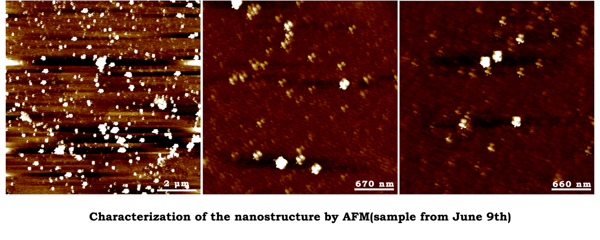
June 30th
- Fuel strand and Anti-fuel strand were diluted to a concentration of 100 μM.
- We took 10 μL from each Fuel tube and mixed them with 80 μL ddH2O to make a mixture of two different Fuel strands at a concentration of 10 μM.
- The Anti-fuel strands were diluted in the same way.
July 5th
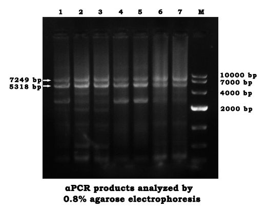
- We used the newly designed primer to perform on July 1st, the program was the same as May 30th, except the PCR cycle was changed into 40 times.
- The products were analyzed by agarose gel electrophoresis (0.8%).
- The gel recovery was repeated as the procedure on May 31st.
- The value of OD260 was 0.109 OD.
- The annealing reaction was repeated in the same procedure as June 9th.
July 11st
Regulation of the Open and Closed State
- Dilute the Fuel strand mixture to a concentration of 9 nM.
- The scaffold was mixed with the newly diluted Fuel solution by 1:1 (15 μL for each).
- Perform an annealing reaction in a condition of 37 ℃ for 30 min.
July 12th
The AFM Characterization of Closed-state Structure
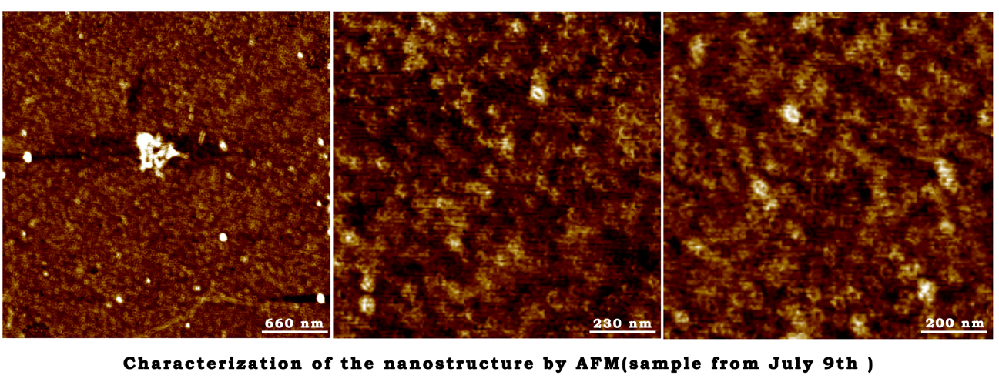
July 14th
50×TAE Buffer
- 242 g Tris, 18.612 g EDTA, 57.1 mL Glacial Acetic Acid and 800 mL deionized water were added to a beaker.
- Its pH was adjusted to 8.3 with NaOH.
10×Mg2+ Buffer (120 mM)
- 0.1143 g MgCl2 were added to 10mL ddH2O.
The Annealing Reaction
| Volume | Final concentration | |
|---|---|---|
| Scaffold | 25 μL | 3.25 nM |
| Staple | 15 μL | 32.5 nM |
| 10×TAE | 5 μL | 1× |
| 10×Mg2+ buffer | 5 μL | 12 mM |
- Reaction condition: lower the temperature from 80 ℃ to 40 ℃ at 4 min/ 2 ℃, maintain 37 ℃ for 30 min, store at 4 ℃.
July 15th
Regulation of Open and Closed States
- The Fuel strand mixture was diluted to a concentration of 48.75 nM (Diluted with 1×TAE).
- The scaffold was mixed with the newly diluted Fuel solution by 1:1 (15 μL for each).
- An annealing reaction was performed in a condition of 37 ℃ for 30 min, then the temperature was slowly decreased to 16 ℃ at a rate of 3 ℃/min.
- The Fuel+ products were mixed with Anti-fuel strand (5 nM) by 1:1 (15 μL for each).
- The third step was repeated.
July 18th
The AFM Characterization of Open-state Structure
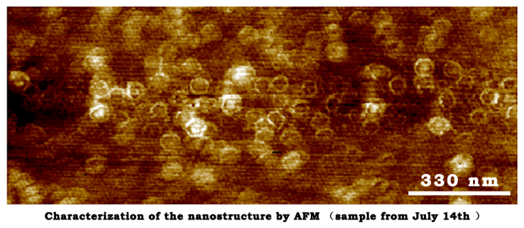
July 21st
Synthesis and Preparation for TEM
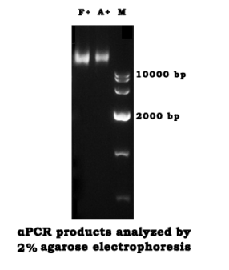
- The annealing reaction was repeated in the same procedure on June 14th.
- The TEM sample was performed by repeating the steps on July 4th.
- Touch the grid with a drop of 5% Phosphotungstic acid solution.
July 25th
The AFM Characterization of Open-state Structure
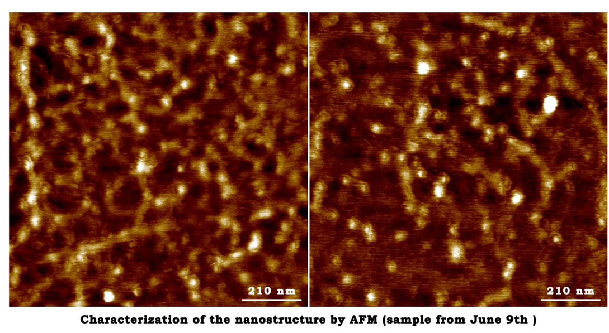
July 26th
- An αPCR was repeated in the same way which did on July 5th.
- The products was synthetized by repeating the steps on May 31st, except the Elution buffer was changed into ddH2O.
- The gel slices’ weight were 0.2445 g, 0.1679 g, 0.1413 g.
- The value of OD260 is 0.480 OD.
July 28th
The AFM Characterization of Closed-state Structure
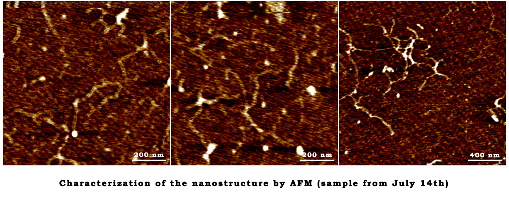
July 31st
The AFM characterization of closed-state structure
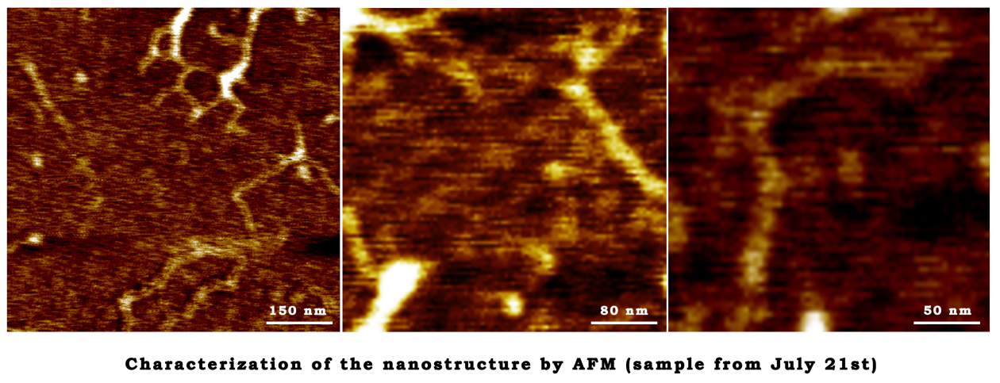
The First Step of TMV Assembly
- 0.1654 g NaH2PO4•2H2O, 6.9237 g Na2HPO4•12H2O were added to 100 mL ddH2O (PBS buffer, pH 8.0).
- the TMV protein was dialysed at 4 ℃ in PBS buffer (pH 8.0) for 2 days.
August 2nd
The Second step of TMV Assembly
- 1.22 g NaH2PO4•2H2O, 4.37 g Na2HPO4•12H2O were added to 100 mL ddH2O (PBS buffer, pH 7.0).
- The buffer for dialysis was changed into PBS buffer (pH 7.0).
- The protein was dialysed at 4 ℃ for 1 day.
August 24th
The Annealing Reaction
| Volume | Final concentration | |
|---|---|---|
| Scaffold | 10 μL | 10 nM |
| Staple | 20 μL | 100 nM |
| 10×TAE | 10 μL | 1× |
| 10×Mg2+ buffer | 10 μL | 12 mM |
| ddH2O | 50 μL |
- Reaction condition
- 10 μL of the NEB single strand M13 was taken as the scaffold.
- The TMV assembly was mixed with the PCR products, waiting for the AFM analysis.
80 ℃→70 ℃ 4 min/ 2 ℃
64 ℃→48 ℃ 4 min/ 2 ℃
46 ℃→40 ℃ 4 min/ 2 ℃
August 26th
Dynamic Light Scattering (DLS)
- The sample temperature was maintained at 25 ℃ during measurement.
- The sample was measured at a concentration of 10 nM.
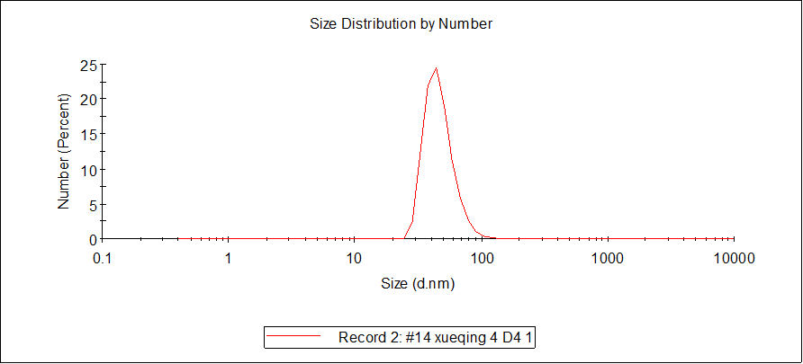
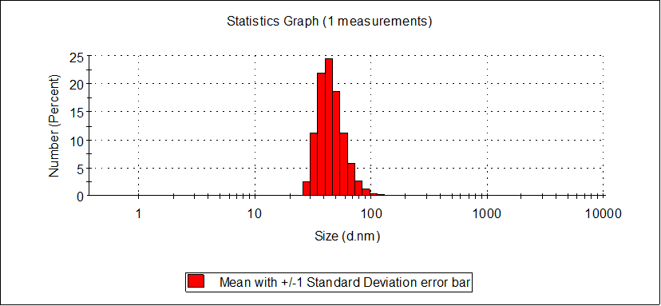
August 29th
The Transmission Electron Microscopy (TEM) Characterization of TMV Assembly and Closed-state DNA Origami
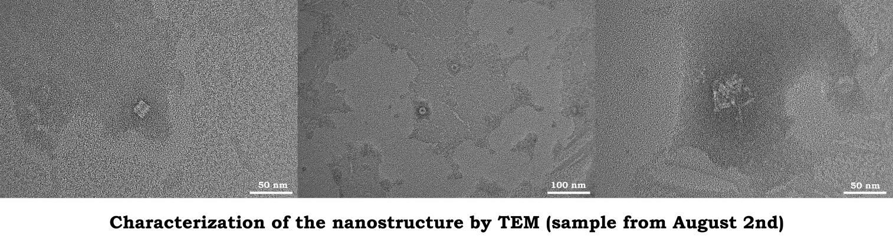
August 31st
The AFM Characterization of TMV Assembly and Closed-state DNA Origami
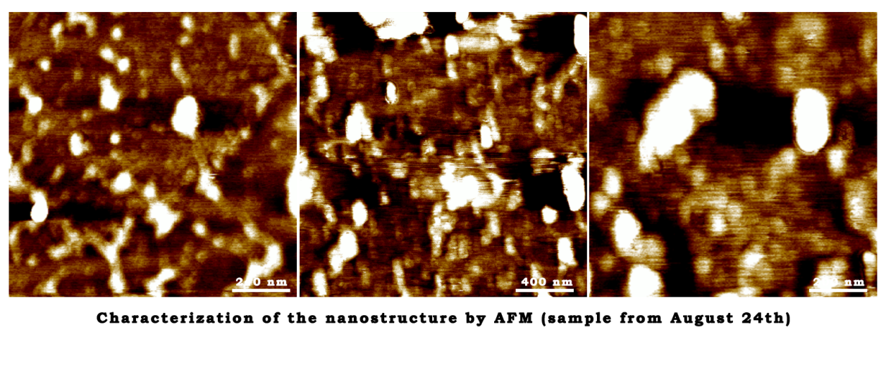
September 4th
The AFM Characterization of TMV Assembly and Closed-state DNA Origami
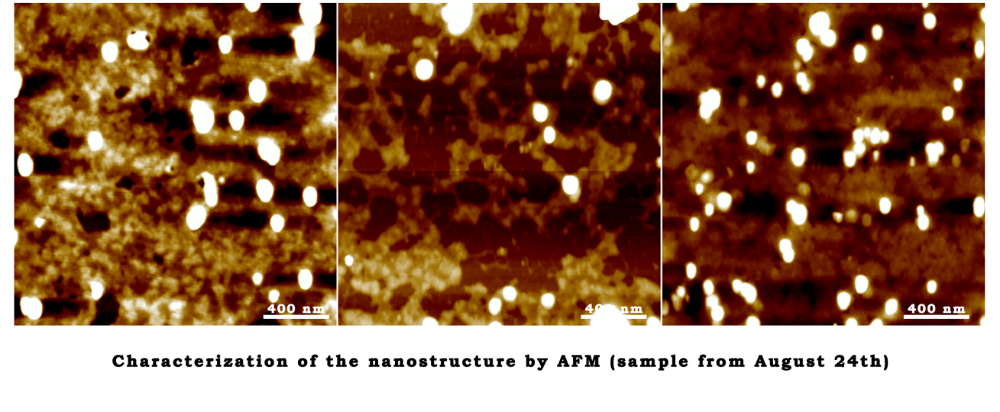
September 15th
The Annealing Reaction
| Volume | Final concentration | |
|---|---|---|
| Scaffold | 2 μL | 10 nM |
| Staple | 4 μL | 100 nM |
| 10×TAE | 2 μL | 1× |
| 10×Mg2+ buffer | 2 μL | 12 mM |
| ddH2O | 10 μL |
September 18th
The AFM Characterization of TMV Assembly and Open-state DNA Origami
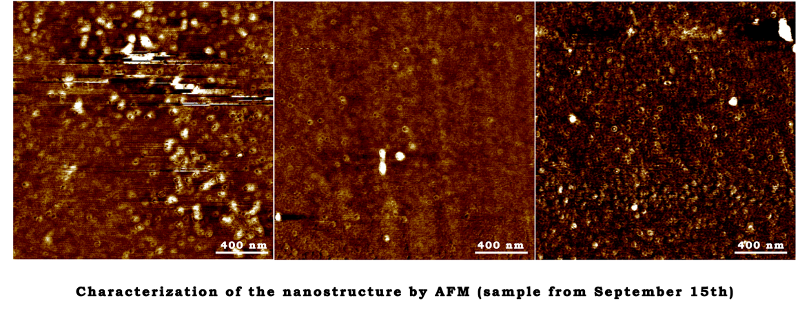
September 23th
The First Step of TMV Assembly
- 0.2481 g NaH2PO4•2H2O, 10.3856 g Na2HPO4•12H2O were added to 150 mL ddH2O (PBS buffer, pH 8.0).
- Dialyse the TMV protein at 4 ℃ in PBS buffer (pH 8.0) for 2 days. September 25th
September 25th
The Annealing Reaction
| CMg2+ | 10 mM | 12 mM | 14 mM | 16 mM | 18 mM | 20 mM |
|---|---|---|---|---|---|---|
| Scaffold | 2 μL | 2 μL | 2 μL | 2 μL | 2 μL | 2 μL |
| Staple | 4 μL | 4 μL | 4 μL | 4 μL | 4 μL | 4 μL |
| 10×TAE | 2 μL | 2 μL | 2 μL | 2 μL | 2 μL | 2 μL |
| 10×Mg2+ | 2 μL | 2 μL | 2 μL | 2 μL | 2 μL | 2 μL |
| ddH2O | 10 μL | 10 μL | 10 μL | 10 μL | 10 μL | 10 μL |
- Reaction condition
80 ℃→70 ℃ 4 min/ 2 ℃
64 ℃→48 ℃ 4 min/ 2 ℃
46 ℃→40 ℃ 4 min/ 2 ℃
37 ℃ 30 min
4 ℃ ∞
The Second Step of TMV Assembly Was the Same as August 2nd
- 1.83 g NaH2PO4•2H2O, 6.555 g Na2HPO4•12H2O were added to 150 mL ddH2O (PBS buffer, pH 7.0).
- The buffer for dialysis was changed into PBS buffer (pH 7.0).
- The protein was dialysed at 4 ℃ for 1 day.
September 26th
- The assembly was analyzed through agarose gel electrophoresis (2%).

September 27th
The Annealing Reaction
| Volume | Final concentration | |
|---|---|---|
| Scaffold | 3 μL | 10 nM |
| Staple | 6 μL | 100 nM |
| 10×TAE | 3 μL | 1× |
| 10×Mg2+ buffer | 3 μL | 12 mM |
| ddH2O | 15 μL |
September 29th
The TEM Characterization of Open-state and Closed-state DNA Origami
October 6th
The Annealing Reaction
- New staple was added to the staple mixture.
| Volume | Final concentration | |
|---|---|---|
| Scaffold | 5 μL | 10 nM |
| Staple | 10 μL | 100 nM |
| 10×TAE | 5 μL | 1× |
| 10×Mg2+ buffer | 5 μL | 12 mM |
| ddH2O | 25 μL |
- Reaction condition:
80 ℃→70 ℃ 4 min/ 2 ℃
64 ℃→48 ℃ 4 min/ 2 ℃
46 ℃→40 ℃ 4 min/ 2 ℃
37 ℃ 30 min
4 ℃ ∞
October 7th
DNA-RNA Hybridization
- The single stranded RNA was dialuted into a concentration of 100 μM.
- The RNA was mixed with the assembled cages in a concentration ratio of 1:2.
- The hybridization ramp was heated at 95 ℃ for 5 min, then cooled down from 40 ℃ to 15 ℃ by 30 min/ 5 ℃.
Incubation for Capture
- The TMV assembly(0.02 mg/mL) and the newly assembled DNA cage(1:3) were mixed.
- Incubate at 20 ℃ for 12 h.
October 12th
The TEM Characterization of Closed-state DNA Origami
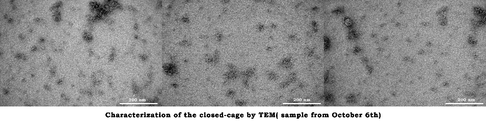
October 16th
The TEM Characterization of TMV Assembly and the Loaded Closed Cage
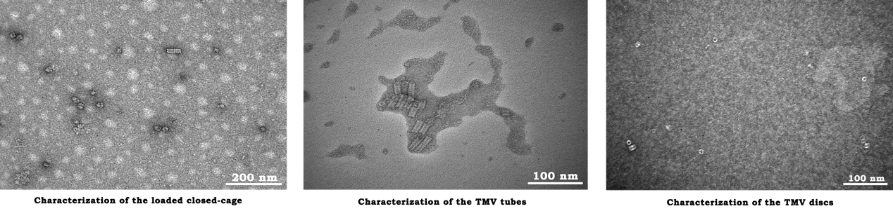